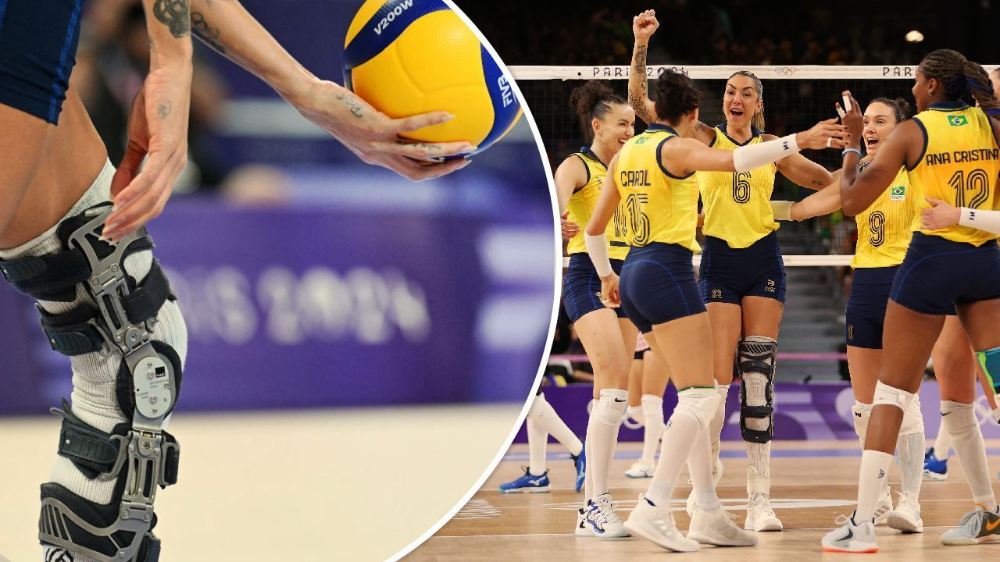

PORTAL VÔLEI BRASIL
VÔLEIBOLL
O vôlei ou voleibol é um esporte coletivo disputado por duas equipes em uma quadra dividida por uma rede. O objetivo é atingir a bola no campo adversário.
"O voleibol ou vôlei é um esporte coletivo praticado em uma quadra dividida por uma rede. Duas equipes disputam a partida com o objetivo de tocar a bola no campo adversário, a qual deve ser arremessada por cima da rede."

AQUECIMENTO
Corrida para frente, para trás, de um lado para o outro. Realizar movimentos alternados dos braços para cima e para baixo contrário ao joelho elevado. Circundução dos ombros para frente e para trás com braços estendidos.
CUIDADOS PESSOAIS
Existem diversas formas de marcar pontos em uma partida de vôlei. A principal delas é fazer a bola cair no chão dentro da quadra adversária.
Também é possível pontuar se a bola bater em algum jogador adversário e cair no chão (dentro ou fora da quadra). Os erros adversários – como saques na rede/para fora ou ataque fora da linha que delimita a quadra – também valem pontos.
